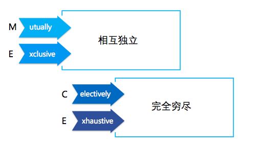
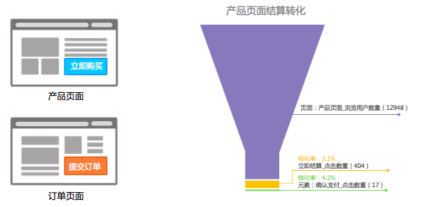
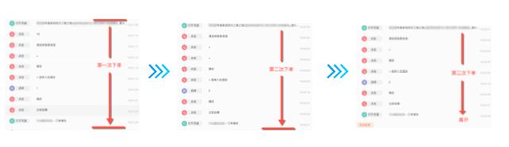

当我们对产品进行分析时，通常会关注各种各样的转化率。例如：注册转化率，电商网站关注购买转化率等。
如果注册转化率偏低，我们将面临着很多的问题，例如如何解释原因？该怎么做？哪些方案是有效的呢？
通常情况下，我们对转化率的解释不应是一概而论的。
解决问题的方法
第一步：理解问题
- 是什么？
- 是否足够具体？
- 是否能够指导具体的行动？
例如我们想提高活跃度，那么应该思考：
如何定义活跃度？究竟是用户来过网站，还是用户使用过某些功能，还是用户使用时长定义了活跃度？
事实上，什么性质的体验决定了如何定义活跃度，例如：
- 电商：浏览商品个数
- SAAS：浏览和下载简历的个数
- 内容社区类：用户访问时长
我们要时刻记得，提高活跃度的终极目的是为了提高核心转化。例如对于电商网站，我们还要关心用户从商品浏览，到购买页，到完成订单这一过程。
此外很重要的一点是，我们应该抛开固有思维，不要一味地以为用户的转化路径一定是 A - B - C，而应该对用户路径有更多的关注。
第二步：问题空间的分类
对问题空间进行分类，我们可以使用管理咨询界常用的方法 —— MECE：

- 相互独立：分类与分类之间不重叠
- 完全穷尽：所有分类要覆盖所有的问题空间
MECE 方法保证了问题空间的不重不漏。
举个栗子：
对于 SAAS 企业的签单问题（与企业的盈利挂钩的核心问题），使用 MECE 方法我们可将问题拆分为两类：
- 新用户签单问题
- 老用户续单问题
这样我们就可针对市场和运营提出针对性的改进方案，使问题更清晰。
第三步：合理假设，有效验证
当我们对问题进行若干分类后，每个分类下将会提出多个假设。此时，我们可能会应用一些经验，优先解决对结果影响最大的问题。
此外，我们还要平衡全面性和有效性两者之间的关系。
例如：我们通过统计发现某网站的注册转化率偏低的问题，但考虑到人员和时间成本。我们会优先对首页注册信息进行修改，由原来需要用户填写注册邮箱、手机号、密码修改为只需要注册邮箱。根据经验，填写的信息越复杂，用户越有可能放弃。
注册问题被放到较高的优先级。
最终通过验证，该网站的注册转化率提高了 25%。
实例
背景：某在线旅游平台，主要业务为短途自助游。在「产品页面」，有“立即购买”按钮，进入「订单页面」，填写信息后可点击“提交订单”按钮。这是常见的购买流程，但也是产品中核心的转化路径。

通过分析，我们发现进入「产品页面」到点击“立即购买”的转化率为 3.1%，进入「订单页面」，提交订单人数转化率为 4.2%。通过与行业数据进行对比发现行业的平均水平在 10% 左右，该指标偏低。
那么问题来了，如何提高购买转化率呢？
第一步：理解问题
转化率是什么？
转化率 = 完成支付的人数 / 进入订单填写页面的人数
- 是否足够具体?
- 如何增加完成支付的人数?
- 是否能够指导具体的行动?
- 如何变流失为转化?
进入订单填写页面的人数（分母）是无法提高，那么问题在于提高分子，将流失的人变成完成支付的人数？
下一步问题就是，流失的原因是什么？
注：此时我们不要被固有思维所限制，而应该切切实实地关注流失用户的行为。
第二步：问题空间解析
被动离开：死机、断网等（不可控因素）
主动离开：用户自己做的决定
因此我们将目光关注在主动离开的用户上
- 需求匹配，未完成
- 需求不匹配
第三步：合理假设，有效验证
假设：
我们首先对两个问题提出假设：
需求不匹配：到订单页只为看最终价格，实际价格与期望可能存在差距
需求匹配，但未完成：设计不完善，页面功能有缺陷
验证：
以“需求匹配，但未完成”为例，我们进行用户细查，即查看用户真实的行为轨迹：

我们发现未支付的用户都存在类似的情况：当用户打开网页进行操作，点击“现在购买”按钮，到达信息填写页面，往往都会回退到产品页面，修改相关信息，再次点击“购买”按钮，以此往返多次。
通过日常经验，我们不难理解，当我们预订旅游产品时，往往需要考虑多方面因素，因此需要不断修改订单的内容，例如酒店预订、日期等等。
在这个产品中，当用户发现订单无法修改时，必须返回上一页进行信息的修改。多次反复后导致用户失去耐心，离开页面。
最终，我们得出的结论是：
由于订单页面无法修改，导致用户无法完成整个流程。
也印证了我们提出的假设：交互设计不完善。
提出可行的方案：
添加用户自由修改信息功能